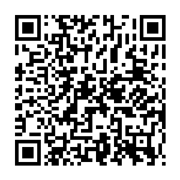

📷 Juega la misión en tu teléfonoUn ángulo es la figura formada por dos rayos que comparten un punto llamado vértice. La abertura entre los lados se mide en grados (°), y el transportador nos ayuda a medirla con precisión.
✅ El centro sobre el vértice, el cero alineado con un lado, y se lee donde cruza el otro: 60° (agudo).
| Tipo | Medida | ¿Cómo reconocerlo? |
|---|---|---|
| ⭕ Nulo | = 0° | Los dos lados están superpuestos: no hay abertura. |
| 📐 Agudo | Más de 0° y menos de 90° | Cabe dentro de la esquina del cuaderno: 30°, 45°, 75°. |
| 🔲 Recto | = 90° | La esquina exacta del cuaderno: se marca con un cuadradito. |
| 📏 Obtuso | Más de 90° y menos de 180° | Sobresale de la esquina: 120°, 150°. |
| ➖ Llano | = 180° | Los lados forman una línea recta. |
| 🌙 Reflejo | Más de 180° y menos de 360° | Ya dio vuelta más allá del llano: 200°, 270°. |
| 🔄 Completo | = 360° | La vuelta entera alrededor del vértice. |
| Pregunta | Procedimiento | Resultado |
|---|---|---|
| ¿Qué tipo es 45°? | 45 < 90 | Agudo |
| ¿Qué tipo es 130°? | 90 < 130 < 180 | Obtuso |
| ¿Qué tipo es 200°? | 180 < 200 < 360 | Reflejo |
| Complemento de 60° | 90 − 60 | 30° |
| Suplemento de 110° | 180 − 110 | 70° |
| Esquina del cuaderno | Medidor de bolsillo | Recto · 90° |
| Error | Por qué está mal | Lo correcto |
|---|---|---|
| No centrar el transportador | Ponerlo «donde caiga» sin ubicar el centro en el vértice da cualquier medida. | Centro SOBRE el vértice, siempre ✔ |
| Leer la escala equivocada | «Medí 120°» cuando el ángulo es de 60°: se leyó la fila que empieza en 180. | Contar desde el 0 del lado alineado ✔ |
| Creer que agudo = grande | «Agudo suena fuerte, será el grande». Agudo significa afilado: es el MENOR de 90°. | Agudo < 90° · obtuso > 90° ✔ |
| Confundir llano con completo | «360° es un ángulo llano». El llano es la línea recta (180°). | 180° = llano · 360° = completo ✔ |
| Confundir complementarios con suplementarios | «120° y 60° son complementarios». Esa pareja suma 180°. | C = 90° · S = 180° ✔ |
| Columna A | Columna B |
|---|---|
| 1. ____ Ángulo agudo | A. Las dos líneas que forman el ángulo |
| 2. ____ Ángulo recto | B. Mide exactamente 90° |
| 3. ____ Ángulo obtuso | C. Una vuelta entera: 360° |
| 4. ____ Ángulo llano | D. El instrumento con una esquina recta para trazar |
| 5. ____ Ángulo completo | E. Mide menos de 90° |
| 6. ____ Vértice | F. Mide más de 180° y menos de 360° |
| 7. ____ Escuadra | G. Mide 180°: forma una línea recta |
| 8. ____ Lados | H. La unidad con que se miden los ángulos |
| 9. ____ Grado | I. El punto donde se unen los dos lados |
| 10. ____ Ángulo reflejo | J. Mide más de 90° y menos de 180° |
| Actividad | Lugar | Valor | Nota obtenida | Observación |
|---|---|---|---|---|
| Copió los contenidos de este material en su cuaderno de Matemáticas. | Tarea en el hogar | 100 | ||
| Resolvió la sección «Ponte a Prueba» directamente en esta ficha. | Tarea en el aula, un día antes del examen | 100 | ||
| Midió y clasificó ángulos con el transportador en su cuaderno con el procedimiento completo. | Tarea en el aula | 100 | ||
| Prueba impresa realizada en el aula. | Evaluación en el aula | 100 | ||
| Promedio nota final → | % | |||
Recuerde que ya aprendió a sacar el promedio: sume el total del valor obtenido y divídalo entre cuatro. El resultado será su nota final. Perderá puntos si no completa el trabajo, si su letra no es legible o si escribe con faltas de ortografía.
Esta hoja se imprime suelta: es solo para el docente o para la autoevaluación guiada.